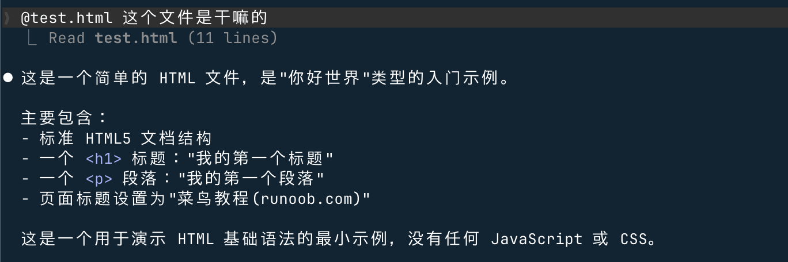

Claude Code 基本用法
この章では、Claude Code を日常開発で使う際に最もよく使う中核機能について説明します。Claude との対話方法、コードの読み取りと修正、コマンド実行、ファイル処理、そして効率を大幅に向上させる実用的なテクニックを含みます。
基本的な対話方法
1、インタラクティブモード（最もよく使う）
プロジェクトディレクトリで Claude Code を起動し、インタラクティブモードに入ると、質問や指示を直接入力できます：
cd /path/to/your/project claude
インタラクティブモードでは、自然言語を直接入力するだけでよく、特別なフォーマットは必要ありません：
这个项目是做什么的？
帮我找出 src/auth.ts 里的 bug
给 UserService 添加一个 getUserById 方法
用 @ファイルを指定することもできます。例えば、claude-test ディレクトリに test.html があるとします。

claude-test に入ってみましょう：
cd claude-test
そして質問します：
@test.html 这个文件是干嘛的

2、単発タスクモード
1つのタスクだけを実行する場合、インタラクティブモードに入る必要はなく、コマンドの後ろにタスクの説明を直接付けられます：
claude "解释一下 package.json 里的 scripts 字段"
実行が完了すると自動的に終了するため、シェルスクリプトでの使用やクイックな問い合わせに適しています。
3、単一クエリモード（-p）
使用する-pパラメータを指定して一度きりのクエリを実行します。Claude の回答はターミナルに直接出力されるため、他のコマンドと組み合わせて使うのに適しています：
claude -p "这段代码有什么问题" < src/utils.ts
# 将 Claude 的分析结果保存到文件 claude -p "分析项目依赖的安全风险" > security-report.md
4、前回の会話を続行（-c）
Claude Code は会話履歴を保存します。使用-cパラメータを使うと、現在のディレクトリで直近の未完了の会話を続行でき、コンテキストを再構築する必要はありません：
claude -c
コードの理解と分析
1、プロジェクト全体の把握
初めてのプロジェクトに入ったときは、まず Claude に全体分析をさせることができます：
这个项目的架构是怎样的？
项目用了哪些主要的技术和依赖？
请介绍一下项目的目录结构
Claude Code はプロジェクトのファイルを自動的に読み取って分析します。読み取るファイルを手動で指定する必要はありません。参照すべき内容を Claude 自身が判断します。
2、特定のファイルやモジュールの分析
解释一下 src/middleware/auth.ts 的工作原理
UserRepository 类里有哪些方法？分别是做什么的？
这个 SQL 查询语句是什么意思？
3、コードの呼び出しチェーンの追跡
当用户登录时，代码执行流程是怎样的？从入口到数据库全部列出来
findUserByEmail 这个函数在哪里被调用？
这个接口的数据最终存到了哪张数据库表里？
4、複雑なロジックの理解
这段递归函数是什么意思？能举个例子说明吗？
为什么这里要用 useCallback？不用会怎样？
这个正则表达式能匹配什么格式的字符串？
コードの修正
1、新機能の追加
必要な機能を説明すると、Claude が適切な場所を見つけて実装します：
在 UserService 里添加一个 updatePassword 方法，需要验证旧密码
给登录接口添加请求频率限制，同一 IP 每分钟最多 5 次
创建一个 formatCurrency 工具函数，支持传入货币代码参数
2、バグの修正
問題の症状を説明すると、Claude が原因を特定し、修正案を提示します：
用户登出后刷新页面仍然显示已登录状态，帮我找出原因并修复
这个函数在输入为空数组时会报错，修复它
控制台报错 "Cannot read properties of undefined (reading 'map')"，帮我定位并修复
3、コードのリファクタリング
把这个 500 行的组件拆分成更小的子组件
将 callback 风格的异步代码改为 async/await
这几个函数里有大量重复代码，帮我提取成通用函数
4、変更内容の確認
Claude Code はファイルを変更する前に必ず diff を表示して確認させます。Claude が修正案を提示した後に議論することができます：
先不要改代码，只告诉我你打算怎么修改
你刚才的修改有个问题：没有处理并发情况，重新来过
这个方案可以，但把函数名改成 validateUserCredentials
Claude Code はファイルを変更する前に必ず変更内容を表示し、確認を求めます。次のいずれかを選択できます。受け入れる（yes）、拒否する（no）または、確認する前に議論を続けることもできます。すべての変更を一度に受け入れなければならないと思う必要はありません。まず確認して、問題がなければ承認してください。
コマンドとテストの実行
1、Claude にコマンドを実行させる
Claude Code はターミナルで直接コマンドを実行できます。やりたいことを自然言語で説明するだけです：
运行测试，看看有没有失败的
安装 dayjs 这个依赖
把项目构建一下，看看有没有报错
Claude はプロジェクト設定（例：package.json内の scripts やCLAUDE.md内のコマンド）に基づいて、正しいコマンドを選択して実行します。
2、特定のテストを実行
运行 auth 模块的测试
运行所有测试并生成覆盖率报告
这个测试为什么失败了？帮我修复
3、コマンド出力の確認
Claude はコマンド出力をコンテキストとして使用し、出力内容に基づいて次のアクションの提案を直接行います：
运行 npm run build，如果有报错帮我修复
跑一下 lint，把所有警告都修复掉
ファイル操作
1、新しいファイルの作成
创建 src/utils/date.ts，实现日期格式化相关的工具函数
新建一个 Docker Compose 配置文件，包含 PostgreSQL 和 Redis 服务
创建 .github/workflows/ci.yml，配置 GitHub Actions 自动运行测试
2、ファイルとコンテンツの検索
项目里有没有处理文件上传的代码？在哪里？
哪些地方用到了 localStorage？
找出所有使用了 console.log 的文件
3、一括変更
把所有文件里的 http://api.example.com 替换成 https://api.example.com
把 src/components/ 下所有组件的 PropTypes 改为 TypeScript 类型定义
给 src/api/ 目录下所有接口函数添加 JSDoc 注释
Git 操作
Claude Code は Git と深く統合されており、自然言語でほぼすべての Git 操作を実行できます。
1、変更の確認
我改了哪些文件？
这次的改动有哪些内容？
最近 10 次提交都改了什么？
2、コードのコミット
提交这次的改动
把这次的修改提交，commit 信息说明修复了登录验证的 bug
Claude は実際の変更内容に基づいて、規約に沿ったコミットメッセージを自動生成します。ショートカットコマンドも使用できます：
claude commit
3、ブランチ管理
新建一个 feature/user-profile 分支
切换到 develop 分支
把 main 分支的最新改动合并进来
4、マージコンフリクトの処理
帮我解决合并冲突
这个文件有冲突，帮我看看哪个版本是正确的
コンテキスト管理のコツ
1、ファイルを手動で指定
使用@文件路径構文を使うと、Claude にどのファイルを参照すべきかを明確に伝えられ、推測を避けられます：
参考 @src/types/user.ts 里的类型定义，给 UserService 添加类型注解
对照 @docs/api-spec.md 里的规范，检查接口实现是否符合要求
2、コンテキストをクリア
会話が長時間にわたった場合や、まったく異なるタスクに切り替える場合は、コンテキストをクリアしてやり直すことをお勧めします：
/clear
クリアすると Claude の「記憶」は初期状態に戻り、新しいセッションは以前の会話内容の影響を受けません。
3、コンテキストの圧縮
Claude が以前の内容を「忘れ」始めたと感じる場合や、会話が長くなった場合は、コンテキストを圧縮できます：
/compact
これにより、Claude は現在の会話内容を簡潔な要約にまとめ、コンテキストのスペースを解放しつつ、重要な情報を保持して作業を続けられます。
4、タスクの適切な分割
複雑なタスクは一度にすべて説明せず、いくつかのステップに分けて段階的に進めると効果的です：
❌ 悪い例：Claude にあまりにも多くの要求を一度に投げる：
"帮我重构整个用户模块，包括添加类型注解、拆分文件、 优化数据库查询、添加缓存、写测试、更新文档"
✅ 良い例：論理的な順序で独立したステップに分割する：
第一步："分析 src/user/ 目录的现有结构，告诉我有哪些问题" 第二步："先给所有函数添加 TypeScript 类型注解" 第三步："把超过 200 行的文件拆分成更小的模块" 第四步："优化数据库查询，添加必要的索引"
よく使うスラッシュコマンド
インタラクティブモードで、入力/と入力すると、利用可能なすべてのコマンドのリストが表示されます。以下は最もよく使うスラッシュコマンドです：
| コマンド | 機能 | 使用シーン |
|---|---|---|
/help |
利用可能なすべてのコマンドと機能の説明を表示 | どのような機能があるか分からないとき |
/clear |
会話履歴をクリアして、新しいセッションを開始 | 新しいタスクに切り替えるとき |
/compact |
現在の会話コンテキストを圧縮してスペースを解放 | 会話が長くなり Claude が忘れ始めたとき |
/init |
プロジェクトを分析して CLAUDE.md ファイルを生成 | 新しいプロジェクトで初めて使うとき |
/resume |
履歴から以前の会話を選択して復元 | 昨日の未完了タスクを続行 |
/undo |
直前のファイル変更を元に戻す | Claude の変更が正しくないとき |
/redo |
元に戻した変更をやり直す | 元に戻してみて、やはり元の方が良かったとき |
/login |
ログインまたはアカウントの切り替え | 別のアカウントに切り替える必要があるとき |
/config |
設定の表示と変更 | Claude Code の動作設定を調整 |
/cost |
このセッションのトークン使用量を表示 | API アカウントを使用するときにコストを確認 |
実用的なテクニック
1、まず Claude に分析させてから実行する
複雑な問題に直面したら、まず Claude に方針を説明させ、方向性が正しいことを確認してから実行します：
不要修改代码，先分析登录失败的可能原因，列出你的排查思路
你打算怎么实现这个功能？先描述方案，我确认后再写代码
2、エラーメッセージとログを提供する
エラーが発生した場合は、エラーメッセージをそのまま会話に貼り付けてください。Claude がエラー内容に基づいて問題を特定します：
运行时报了这个错误，帮我分析原因：
TypeError: Cannot read properties of null (reading 'userId')
at getUserProfile (src/services/user.ts:42:18)
at async ProfileController.getProfile (src/controllers/profile.ts:15:20)
3、スクリーンショットで UI の問題を説明する
Claude Code はマルチモーダル入力をサポートしており、スクリーンショットを直接会話に貼り付けて、UI関連の問題を説明できます：
[粘贴截图] 这个按钮点击后没有反应，但控制台没有报错，帮我排查
[粘贴设计稿截图] 按照这个设计实现 Header 组件
4、「続行」をうまく使う
Claude の回答が途中で切れた場合、またはまだ言い終わっていないと感じた場合は、「続けて」と言うだけでOKです：
继续
还有吗？
把剩下的部分也实现了
5、変更内容の説明を求める
重要なコードの変更については、Claude に各変更箇所の理由を説明するよう求めることができます：
修改完之后给我解释一下每处改动的目的
这里为什么要用 Promise.allSettled 而不是 Promise.all？
6、Claude の操作範囲を制限する
Claude に他のファイルを勝手に変更してほしくない場合は、範囲を明確に限定できます：
只修改 src/auth.ts 这一个文件，不要改其他地方
只读取代码不要修改，帮我分析这个模块的性能瓶颈
一般的なワークフロー例
ワークフロー1：新規プロジェクトを素早く把握する
例
> このプロジェクトは何をするものですか？どのような技術を使っていますか？
# ステップ2：ディレクトリ構造を把握する
> プロジェクトのディレクトリ構造を説明してください。コアモジュールを中心に紹介してください
# ステップ3：実行方法を把握する
> このプロジェクトをローカルでどうやって実行しますか？
# ステップ4：プロジェクト説明ファイルを生成する
> プロジェクトの重要な情報をまとめた CLAUDE.md ファイルを生成してください
ワークフロー2：バグを修正する
例
> ユーザーからのフィードバック：個人情報を変更した後、ページ上部のユーザー名がリアルタイムに更新されない
# ステップ2：Claude に原因を分析させる
> まず考えられる原因を分析してください。コードは変更しないでください
# ステップ3：方針を確認してから修正する
> あなたが言った2番目の原因の方が可能性が高そうです。その方針で修正してください
# ステップ4：修正を検証する
> 関連するテストを実行して、修正が有効であることを確認してください
ワークフロー3：新機能を追加する
例
> 注文リストにステータスでフィルタリングする機能を追加する必要があります。ステータスは：未払い、支払い済み、発送済み、完了です
# ステップ2：既存のコードを把握する
> まず注文に関する既存のコード構造を見てください
# ステップ3：機能を実装する
> 既存の機能に影響を与えずにフィルタリング機能を実装してください
# ステップ4：テストを追加する
> この新機能のテストケースを書いてください
# ステップ5：コードをコミットする
> 今回の変更をコミットしてください
ワークフロー4：コードレビュー
# 审查特定文件 > 帮我审查 src/payment/processor.ts 这个文件， > 重点关注错误处理、边界情况和安全风险 # 审查 git 改动 > 审查我这次的所有改动，看看有没有明显的问题 # 针对性检查 > 这段代码有没有 SQL 注入的风险？
注意事項
ファイル変更について：Claude Code は変更前に diff を表示して確認を求めます。考えなしにすべて受け入れないでください。特にコアロジックに関わる変更は、diff の内容をよく読んでから受け入れるかどうかを判断してください。
機密ファイルについて：にCLAUDE.md 或 .claude/settings.jsonおいて、Claude が読み取りまたは変更できないファイルを明確に指定します（例：.env、キーファイルなど）、意図しない情報漏えいを防ぎます。
大規模なタスクについて：1つの会話に未完了のタスクを溜めすぎないようにしてください。Claude が焦点を失いやすくなります。1つのタスクを完了してから次のタスクを開始するか、/clearを使用して最初からやり直してください。
コード品質について：Claude が生成したコードは常に最適な解決策とは限りません。重要なモジュールについては、実行完了後に code review を行うことをお勧めします。各変更の目的を理解し、プロジェクトの設計原則に適合していることを確認してください。
その他の拡張
クリックしてノートを共有
<p style="font-size:14px;">ノートは本記事の内容を拡張したものである必要があります！</p><br> <p style="font-size:12px;"><a href="../tougao.html" target="_blank">記事の投稿はこちらをクリック</a></p> <p style="font-size:14px;"><a href="../w3cnote/runoob-user-test-intro.html" target="_blank">登録招待コードの取得方法</a></p> <h3 class="text-muted"><i class="fa fa-info-circle" aria-hidden="true"></i> ノートを共有する前に<a href=";.html" class="runoob-pop">ログイン</a>が必要です！</h3> <p><a href="../w3cnote/runoob-user-test-intro.html" target="_blank">登録招待コードの取得方法</a></p>